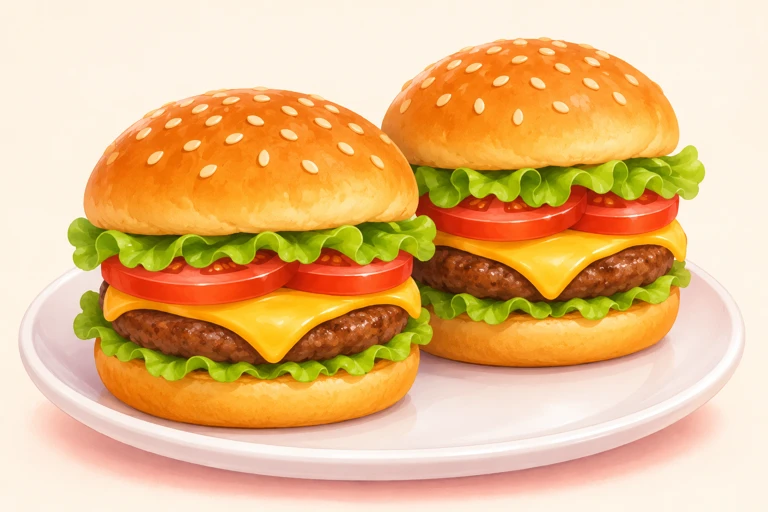
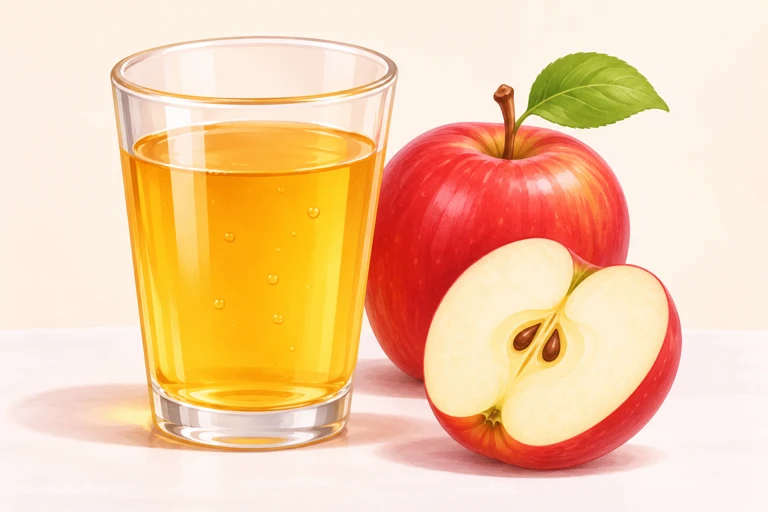

Children’s Day
ngày Thiếu nhi
CHILDREN’SDAY
We will dance on Children’s Day.
Chưa đánh dấu
Unit 13 · Học trước, thử nhớ rồi luyện đề
Lên kế hoạch cho ngày đặc biệt: làm gì, ăn gì và uống gì. Nghe kèm bài và luyện nói theo lượt.
Unit 13 có âm thanh đi kèm (giọng máy Anh Mỹ). Em có thể nghe dù máy chưa cài giọng Anh. Nếu lỗi mạng, bấm nghe lại hoặc chọn giọng thiết bị nếu có.
Bấm Nghe khi em sẵn sàng. Trang không tự phát âm thanh.
Nghe cả từ/cụm, đọc theo rồi dùng ABC để nhớ cách viết. ABC đọc tên chữ cái, không phải bài luyện âm. Với cụm nhiều từ, các nhóm chữ được tách riêng.
Chưa có từ cần ôn. Em chọn một nhóm rồi bấm “Cần ôn lại” ở từ muốn luyện thêm nhé.
ngày Thiếu nhi
We will dance on Children’s Day.
Chưa đánh dấu
ngày Nhà giáo
We will sing on Teachers’ Day.
Chưa đánh dấu
ngày Thể thao
We will play badminton on Sports Day.
Chưa đánh dấu
Tết Trung thu
We will have a party at Mid-Autumn Festival.
Chưa đánh dấu

bánh pizza
We will have pizza.
Chưa đánh dấu

bánh mì kẹp thịt
We will have burgers.
Chưa đánh dấu

trà sữa
We will have milk tea.
Chưa đánh dấu

nước ép táo
We will have apple juice.
Chưa đánh dấu
nước chanh
We will have lemonade.
Chưa đánh dấu
nước
We will have water.
Chưa đánh dấu
nhảy/múa
We will dance at the party.
Chưa đánh dấu
hát
They will sing at our party.
Chưa đánh dấu
chơi cầu lông
We will play badminton on Sports Day.
Chưa đánh dấu
tổ chức/dự tiệc
We will have a party on Sunday.
Chưa đánh dấu
đồ ăn
What food will you have?
Chưa đánh dấu
đồ uống
What drinks will you have?
Chưa đánh dấu
Nghe hội thoại rồi đọc theo. “Đến lượt em” chỉ đọc A để em nói câu trả lời của B.
A: What will you do on Children’s Day?
B: We will dance and sing.
What will…do hỏi hoạt động.
A: What will you do at Mid-Autumn Festival?
B: We will have a party.
At Mid-Autumn Festival; on Children’s Day.
A: What food will you have at the party?
B: We will have pizza and burgers.
Food là đồ ăn; sau will dùng have.
A: What drinks will you have at the party?
B: We will have apple juice and water.
Drinks là đồ uống.
A: Will you come to my birthday party on Sunday?
B: Yes, I will. Thank you.
Will you…? đáp Yes, I will.
A: What will they do on Sports Day?
B: They will play badminton.
Will không đổi theo they; dùng play nguyên mẫu.
Ví dụ tự soạn. Vị trí và sở thích là giả định theo từng ví dụ. Trang không thu âm hoặc tự chấm giọng của em.
Mỗi nhóm có bốn bài nhỏ, không giới hạn thời gian. Em được sửa rồi thử lại. Câu trả lời tự lưu để quay lại làm tiếp.